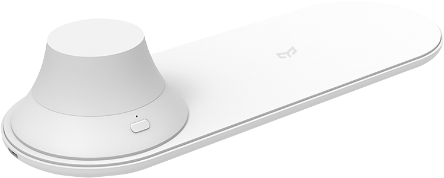
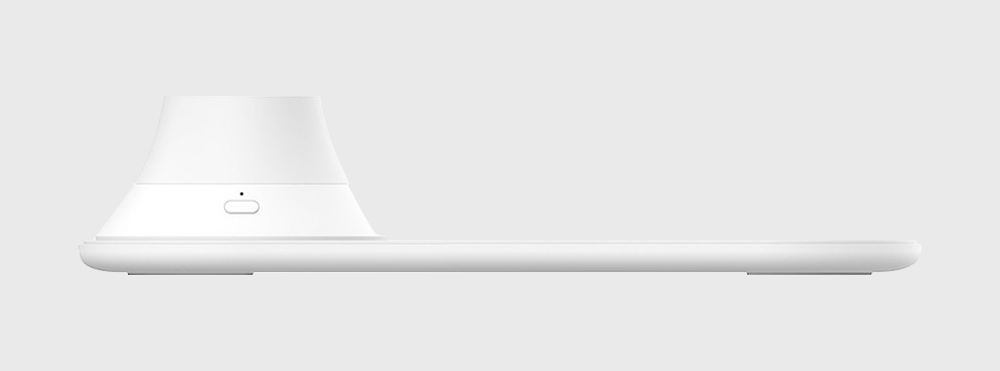

<div class="row wireless-charge">
    <div class="col-xs-12 col-sm-12 col-md-10 col-md-offset-1 col-lg-8 col-lg-offset-2 content">

        <section class="row wireless-charge_content_1">
            <div class="col-xs-12 col-sm-6 col-md-6 col-lg-6">
                <div class="text">
                    <h1>Yeelight Wireless Charge Nightlight</h1>
                    <h2>Беспроводное зарядное устройство с&nbsp;ночником</h2>
                    <p>Быстрая беспроводная зарядка | Магнитное крепление | Ночник с приятным светом</p>
                </div>
            </div>
            <div class="col-xs-12 col-sm-6 col-md-6 col-lg-6">
                
            </div>
        </section>

        <section class="row wireless-charge_content_2">
            <div class="col-xs-12 col-sm-12 col-md-6 col-md-push-6 col-lg-6 col-lg-push-6" style="padding: 0">
                <div class="text">
                    <h2>Два в одном</h2>
                    <p>Yeelight Wireless Charge Nightlight — это беспроводная зарядка и ночник в изящном корпусе. </p>
                    <p>Устройство поддерживает быструю беспроводную зарядку смартфона, a на специальное магнитное
                        крепление устанавливается лампа ночника c мягким и приятным светом.</p>
                </div>
            </div>
            <div class="col-xs-12 col-sm-12 col-md-6 col-md-pull-6 col-lg-6 col-lg-pull-6"
                style="padding: 0; font-size: 0;">
                </div>
        </section>


        <section class="row wireless-charge_content_3">
            <div class="col-xs-12 col-sm-12 col-md-6 col-lg-6" style="padding: 0">
                <div class="text">
                    <h2>Умная зарядка</h2>
                    <p>Для беспроводной зарядки используются чипы, контролирующие процесс заряда. Зарядка вашего
                        смартфона станет гораздо удобнее. Идентификация посторонних предметов с последующим отключением
                        питания.</p>
                    <p>Зарядное устройство совместимо практически со всеми моделями смартфонов с функцией беспроводной
                        зарядки.</p>
                </div>
            </div>
            <div class="col-xs-12 col-sm-12 col-md-6 col-lg-6" style="padding: 0; font-size: 0;"></div>
        </section>

        <section class="row wireless-charge_content_2">
            <div class="col-xs-12 col-sm-12 col-md-6 col-md-push-6 col-lg-6 col-lg-push-6" style="padding: 0">
                <div class="text">
                    <h2>Съемный ночник</h2>
                    <p>Кроме функции мощной беспроводной зарядки, устройство имеет магнитную лампу ночник.</p>
                    <p>Просто выньте лампу и используйте её и зарядный док отдельно. Вставьте обратно, чтобы окутать
                        комнату мягким и теплым свечением.</p>
                </div>
            </div>
            <div class="col-xs-12 col-sm-12 col-md-6 col-md-pull-6 col-lg-6 col-lg-pull-6"
                style="padding: 0; font-size: 0;">
                </div>
        </section>

        <section class="row wireless-charge_content_4">
            <div class="col-xs-12 col-sm-12 col-md-12 col-lg-12 align-center" style="padding: 0;">
                
                <div class="text">
                    <h2>Минималистичный дизайн</h2>
                    <p>Несмотря на внешнюю скромность, дизайн устройства отличается особым стилем. Гармоничный белый
                        цвет, скругленные углы органично впишут устройство в любую обстановку.</p>
                </div>
            </div>
        </section>

        <section class="row wireless-charge_content_11">
            <div class="col-sm-12 col-md-12 col-lg-12" style="padding: 0">
                
                <table class="table">
                    <thead>
                        <tr>
                            <th colspan="2">Характеристики</th>
                        </tr>
                    </thead>
                    <tbody>
                        <tr>
                            <td>Модель</td>
                            <td>YLYD04YI</td>
                        </tr>
                        <tr>
                            <td>Цвет</td>
                            <td>белый</td>
                        </tr>
                        <tr>
                            <td>Размеры</td>
                            <td>225×80×43.5 мм</td>
                        </tr>
                        <tr>
                            <td>Мощность</td>
                            <td>5-10 W</td>
                        </tr>
                        <tr>
                            <td>Время работы</td>
                            <td>до 11 часов в режиме белого свечения, время работы до 24 часов в режиме ночника</td>
                        </tr>
                        <tr>
                            <td>Цветовая температура</td>
                            <td>2700-5000К</td>
                        </tr>
                        <tr>
                            <td>Аккумулятор ночника</td>
                            <td>500 мАч</td>
                        </tr>
                        <tr>
                            <td>Материал</td>
                            <td>ABS пластик + поликарбонат</td>
                        </tr>
                    </tbody>
                </table>
            </div>
        </section>
    </div>
</div>